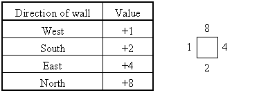

|
Problem F: Tilt! |
You probably have heard of "2D tilt maze" before. It is created by Andrea Gilbert, a software engineer living in England. Ever since its first Internet appearence in 1998, 2D tilt maze has always been one of the most popular online puzzles in the world.
In a 2D tilt maze, a red ball sits in a flat tray containing one or more blue squares. The challenge is to guide the ball around the tray and collect all the blue squares. Tilt the tray to, literally, start the ball rolling. The ball rolls in a straight line until it hits a wall, then you can tilt again.
The figure on the right is a maze. It can be looked upon as a 5 x 5 grid with some lines omitted. The line pattern of every cell of this grid can then be represented by a hexadecimal number:

So, the maze above can be represented as:
9AC9C 18006 5120C 12806 3A63E
You are asked to write a program that analyses some mazes, and works out their shortest solutions. You can be sure that all given mazes are solvable.
The input file consists of several test cases. The format of each of them is described as follows:
The first line gives an integer N (2 ≤ N ≤ 10). There are then N lines, each with N hexadecimal numbers, representing the line pattern of each cell. The next line contains two integers r and c (1 ≤ r, c ≤ N), which are the coordinates of the starting position of the ball. Finally comes a list of coordinates of the blue square(s). Coordinates of each blue square are given on a separate line, i.e. one line with two numbers for a square.
The input file is terminated by a line with only the number 0.
For each case, your program should output a single line with the description of a path with minimum length that the ball can collect all the blue squares. Use the letters 'N', 'S', 'E' and 'W' to denote north, south, east and west respectively. Note that by 'north' we mean facing upwards. If there are multiple shortest solutions, print the lexicographically smallest one.
5 9AC9C 18006 5120C 12806 3A63E 1 1 5 5 0
ESWNENWSE
There are less than 40 sets of input, each of them containing no more than 25 blue squares. All except two test cases can be solved within 35 steps. One of the two harder cases takes at least 49 steps to solve, and the other 53.